options(repos = c(CRAN = "https://cran.rstudio.com/"))
install.packages("tidyverse")
install.packages("sf")
install.packages("rnaturalearth")
install.packages("rnaturalearthdata")
install.packages("ggrepel")
install.packages("gapminder")
# rnaturalearthhires は CRAN にないため別リポジトリから
install.packages("rnaturalearthhires",
repos = "https://ropensci.r-universe.dev")
# jpndistrict は GitHub から
install.packages("remotes")
remotes::install_github("uribo/jpndistrict")5 可視化3
地図表現（世界地図・日本地図・都道府県）
今日の目標
- 世界地図・日本地図を描けるようになる。
- コロプレス図（塗り分け地図）でデータを地図上に表現できるようになる。
- 都道府県レベルの地図を描けるようになる。
5.1 パッケージの準備
大学のPCはシャットダウンする度に初期化されるため、毎回インストールが必要です。 毎回授業開始時にこのブロックを実行してください。
必要なパッケージを読み込みます。
Note
今回使うパッケージの概要
| パッケージ | 役割 |
|---|---|
sf |
地理空間データ（ポリゴン・点・線）を扱う |
rnaturalearth |
世界地図・国境データを取得する |
rnaturalearthdata |
rnaturalearth のデータ本体 |
ggrepel |
地図上のラベルが重ならないよう自動調整する |
gapminder |
国別の経済・人口データ（コロプレス図で使用） |
jpndistrict |
日本の都道府県・市区町村の地図データを取得する |
5.2 R で地図を描く仕組み
R で地図を描く際には、次の 2 種類のデータが必要です。
| データの種類 | 内容 | 例 |
|---|---|---|
| 地理空間情報 | 国や地域の「形」（境界線・ポリゴン） | 国境データ、都道府県の形 |
| 定量データ | 地図上に色で表したい数値 | 人口、GDP、感染者数 |
この 2 つを共通のキー（国名・都道府県名など）で結合し、ggplot2 の geom_sf() で描画します。
地理空間データ + 定量データ → 結合（join） → geom_sf() で描画
Note
5.3 世界地図
世界地図データの取得
rnaturalearth パッケージの ne_countries() 関数で世界の国境データを取得します。
- 1
-
scale = "medium"で中解像度のデータを取得。returnclass = "sf"で sf オブジェクトとして返す
Rows: 242
Columns: 169
$ featurecla <chr> "Admin-0 country", "Admin-0 country", "Admin-0 country", "A…
$ scalerank <int> 1, 1, 1, 3, 5, 6, 1, 1, 1, 3, 5, 3, 3, 3, 3, 1, 5, 3, 3, 3,…
$ labelrank <int> 3, 3, 3, 2, 3, 6, 4, 3, 4, 6, 6, 6, 6, 6, 4, 5, 2, 4, 5, 6,…
$ sovereignt <chr> "Zimbabwe", "Zambia", "Yemen", "Vietnam", "Venezuela", "Vat…
$ sov_a3 <chr> "ZWE", "ZMB", "YEM", "VNM", "VEN", "VAT", "VUT", "UZB", "UR…
$ adm0_dif <int> 0, 0, 0, 0, 0, 0, 0, 0, 0, 0, 0, 1, 1, 1, 1, 1, 1, 1, 1, 1,…
$ level <int> 2, 2, 2, 2, 2, 2, 2, 2, 2, 2, 2, 2, 2, 2, 2, 2, 2, 2, 2, 2,…
$ type <chr> "Sovereign country", "Sovereign country", "Sovereign countr…
$ tlc <chr> "1", "1", "1", "1", "1", "1", "1", "1", "1", "1", "1", "1",…
$ admin <chr> "Zimbabwe", "Zambia", "Yemen", "Vietnam", "Venezuela", "Vat…
$ adm0_a3 <chr> "ZWE", "ZMB", "YEM", "VNM", "VEN", "VAT", "VUT", "UZB", "UR…
$ geou_dif <int> 0, 0, 0, 0, 0, 0, 0, 0, 0, 0, 0, 0, 0, 0, 0, 0, 0, 0, 0, 0,…
$ geounit <chr> "Zimbabwe", "Zambia", "Yemen", "Vietnam", "Venezuela", "Vat…
$ gu_a3 <chr> "ZWE", "ZMB", "YEM", "VNM", "VEN", "VAT", "VUT", "UZB", "UR…
$ su_dif <int> 0, 0, 0, 0, 0, 0, 0, 0, 0, 0, 0, 0, 0, 0, 0, 0, 0, 0, 0, 0,…
$ subunit <chr> "Zimbabwe", "Zambia", "Yemen", "Vietnam", "Venezuela", "Vat…
$ su_a3 <chr> "ZWE", "ZMB", "YEM", "VNM", "VEN", "VAT", "VUT", "UZB", "UR…
$ brk_diff <int> 0, 0, 0, 0, 0, 0, 0, 0, 0, 0, 0, 0, 0, 0, 0, 0, 0, 0, 1, 0,…
$ name <chr> "Zimbabwe", "Zambia", "Yemen", "Vietnam", "Venezuela", "Vat…
$ name_long <chr> "Zimbabwe", "Zambia", "Yemen", "Vietnam", "Venezuela", "Vat…
$ brk_a3 <chr> "ZWE", "ZMB", "YEM", "VNM", "VEN", "VAT", "VUT", "UZB", "UR…
$ brk_name <chr> "Zimbabwe", "Zambia", "Yemen", "Vietnam", "Venezuela", "Vat…
$ brk_group <chr> NA, NA, NA, NA, NA, NA, NA, NA, NA, NA, NA, NA, NA, NA, NA,…
$ abbrev <chr> "Zimb.", "Zambia", "Yem.", "Viet.", "Ven.", "Vat.", "Van.",…
$ postal <chr> "ZW", "ZM", "YE", "VN", "VE", "V", "VU", "UZ", "UY", "FSM",…
$ formal_en <chr> "Republic of Zimbabwe", "Republic of Zambia", "Republic of …
$ formal_fr <chr> NA, NA, NA, NA, "República Bolivariana de Venezuela", NA, N…
$ name_ciawf <chr> "Zimbabwe", "Zambia", "Yemen", "Vietnam", "Venezuela", "Hol…
$ note_adm0 <chr> NA, NA, NA, NA, NA, NA, NA, NA, NA, NA, NA, "U.S.A.", "U.S.…
$ note_brk <chr> NA, NA, NA, NA, NA, NA, NA, NA, NA, NA, NA, NA, NA, NA, NA,…
$ name_sort <chr> "Zimbabwe", "Zambia", "Yemen, Rep.", "Vietnam", "Venezuela,…
$ name_alt <chr> NA, NA, NA, NA, NA, "Holy See", NA, NA, NA, NA, NA, NA, NA,…
$ mapcolor7 <int> 1, 5, 5, 5, 1, 1, 6, 2, 1, 5, 2, 4, 4, 4, 4, 4, 4, 6, 6, 6,…
$ mapcolor8 <int> 5, 8, 3, 6, 3, 3, 3, 3, 2, 2, 5, 5, 5, 5, 5, 5, 5, 6, 6, 6,…
$ mapcolor9 <int> 3, 5, 3, 5, 1, 4, 7, 5, 2, 4, 5, 1, 1, 1, 1, 1, 1, 6, 6, 6,…
$ mapcolor13 <int> 9, 13, 11, 4, 4, 2, 3, 4, 10, 13, 3, 1, 1, 1, 1, 1, 1, 3, 3…
$ pop_est <dbl> 14645468, 17861030, 29161922, 96462106, 28515829, 825, 2998…
$ pop_rank <int> 14, 14, 15, 16, 15, 2, 10, 15, 12, 9, 8, 8, 9, 9, 8, 12, 17…
$ pop_year <int> 2019, 2019, 2019, 2019, 2019, 2019, 2019, 2019, 2019, 2019,…
$ gdp_md <int> 21440, 23309, 22581, 261921, 482359, -99, 934, 57921, 56045…
$ gdp_year <int> 2019, 2019, 2019, 2019, 2014, 2019, 2019, 2019, 2019, 2018,…
$ economy <chr> "5. Emerging region: G20", "7. Least developed region", "7.…
$ income_grp <chr> "5. Low income", "4. Lower middle income", "4. Lower middle…
$ fips_10 <chr> "ZI", "ZA", "YM", "VM", "VE", "VT", "NH", "UZ", "UY", "FM",…
$ iso_a2 <chr> "ZW", "ZM", "YE", "VN", "VE", "VA", "VU", "UZ", "UY", "FM",…
$ iso_a2_eh <chr> "ZW", "ZM", "YE", "VN", "VE", "VA", "VU", "UZ", "UY", "FM",…
$ iso_a3 <chr> "ZWE", "ZMB", "YEM", "VNM", "VEN", "VAT", "VUT", "UZB", "UR…
$ iso_a3_eh <chr> "ZWE", "ZMB", "YEM", "VNM", "VEN", "VAT", "VUT", "UZB", "UR…
$ iso_n3 <chr> "716", "894", "887", "704", "862", "336", "548", "860", "85…
$ iso_n3_eh <chr> "716", "894", "887", "704", "862", "336", "548", "860", "85…
$ un_a3 <chr> "716", "894", "887", "704", "862", "336", "548", "860", "85…
$ wb_a2 <chr> "ZW", "ZM", "RY", "VN", "VE", "-99", "VU", "UZ", "UY", "FM"…
$ wb_a3 <chr> "ZWE", "ZMB", "YEM", "VNM", "VEN", "-99", "VUT", "UZB", "UR…
$ woe_id <int> 23425004, 23425003, 23425002, 23424984, 23424982, 23424986,…
$ woe_id_eh <int> 23425004, 23425003, 23425002, 23424984, 23424982, 23424986,…
$ woe_note <chr> "Exact WOE match as country", "Exact WOE match as country",…
$ adm0_iso <chr> "ZWE", "ZMB", "YEM", "VNM", "VEN", "VAT", "VUT", "UZB", "UR…
$ adm0_diff <chr> NA, NA, NA, NA, NA, NA, NA, NA, NA, NA, NA, NA, NA, NA, NA,…
$ adm0_tlc <chr> "ZWE", "ZMB", "YEM", "VNM", "VEN", "VAT", "VUT", "UZB", "UR…
$ adm0_a3_us <chr> "ZWE", "ZMB", "YEM", "VNM", "VEN", "VAT", "VUT", "UZB", "UR…
$ adm0_a3_fr <chr> "ZWE", "ZMB", "YEM", "VNM", "VEN", "VAT", "VUT", "UZB", "UR…
$ adm0_a3_ru <chr> "ZWE", "ZMB", "YEM", "VNM", "VEN", "VAT", "VUT", "UZB", "UR…
$ adm0_a3_es <chr> "ZWE", "ZMB", "YEM", "VNM", "VEN", "VAT", "VUT", "UZB", "UR…
$ adm0_a3_cn <chr> "ZWE", "ZMB", "YEM", "VNM", "VEN", "VAT", "VUT", "UZB", "UR…
$ adm0_a3_tw <chr> "ZWE", "ZMB", "YEM", "VNM", "VEN", "VAT", "VUT", "UZB", "UR…
$ adm0_a3_in <chr> "ZWE", "ZMB", "YEM", "VNM", "VEN", "VAT", "VUT", "UZB", "UR…
$ adm0_a3_np <chr> "ZWE", "ZMB", "YEM", "VNM", "VEN", "VAT", "VUT", "UZB", "UR…
$ adm0_a3_pk <chr> "ZWE", "ZMB", "YEM", "VNM", "VEN", "VAT", "VUT", "UZB", "UR…
$ adm0_a3_de <chr> "ZWE", "ZMB", "YEM", "VNM", "VEN", "VAT", "VUT", "UZB", "UR…
$ adm0_a3_gb <chr> "ZWE", "ZMB", "YEM", "VNM", "VEN", "VAT", "VUT", "UZB", "UR…
$ adm0_a3_br <chr> "ZWE", "ZMB", "YEM", "VNM", "VEN", "VAT", "VUT", "UZB", "UR…
$ adm0_a3_il <chr> "ZWE", "ZMB", "YEM", "VNM", "VEN", "VAT", "VUT", "UZB", "UR…
$ adm0_a3_ps <chr> "ZWE", "ZMB", "YEM", "VNM", "VEN", "VAT", "VUT", "UZB", "UR…
$ adm0_a3_sa <chr> "ZWE", "ZMB", "YEM", "VNM", "VEN", "VAT", "VUT", "UZB", "UR…
$ adm0_a3_eg <chr> "ZWE", "ZMB", "YEM", "VNM", "VEN", "VAT", "VUT", "UZB", "UR…
$ adm0_a3_ma <chr> "ZWE", "ZMB", "YEM", "VNM", "VEN", "VAT", "VUT", "UZB", "UR…
$ adm0_a3_pt <chr> "ZWE", "ZMB", "YEM", "VNM", "VEN", "VAT", "VUT", "UZB", "UR…
$ adm0_a3_ar <chr> "ZWE", "ZMB", "YEM", "VNM", "VEN", "VAT", "VUT", "UZB", "UR…
$ adm0_a3_jp <chr> "ZWE", "ZMB", "YEM", "VNM", "VEN", "VAT", "VUT", "UZB", "UR…
$ adm0_a3_ko <chr> "ZWE", "ZMB", "YEM", "VNM", "VEN", "VAT", "VUT", "UZB", "UR…
$ adm0_a3_vn <chr> "ZWE", "ZMB", "YEM", "VNM", "VEN", "VAT", "VUT", "UZB", "UR…
$ adm0_a3_tr <chr> "ZWE", "ZMB", "YEM", "VNM", "VEN", "VAT", "VUT", "UZB", "UR…
$ adm0_a3_id <chr> "ZWE", "ZMB", "YEM", "VNM", "VEN", "VAT", "VUT", "UZB", "UR…
$ adm0_a3_pl <chr> "ZWE", "ZMB", "YEM", "VNM", "VEN", "VAT", "VUT", "UZB", "UR…
$ adm0_a3_gr <chr> "ZWE", "ZMB", "YEM", "VNM", "VEN", "VAT", "VUT", "UZB", "UR…
$ adm0_a3_it <chr> "ZWE", "ZMB", "YEM", "VNM", "VEN", "VAT", "VUT", "UZB", "UR…
$ adm0_a3_nl <chr> "ZWE", "ZMB", "YEM", "VNM", "VEN", "VAT", "VUT", "UZB", "UR…
$ adm0_a3_se <chr> "ZWE", "ZMB", "YEM", "VNM", "VEN", "VAT", "VUT", "UZB", "UR…
$ adm0_a3_bd <chr> "ZWE", "ZMB", "YEM", "VNM", "VEN", "VAT", "VUT", "UZB", "UR…
$ adm0_a3_ua <chr> "ZWE", "ZMB", "YEM", "VNM", "VEN", "VAT", "VUT", "UZB", "UR…
$ adm0_a3_un <int> -99, -99, -99, -99, -99, -99, -99, -99, -99, -99, -99, -99,…
$ adm0_a3_wb <int> -99, -99, -99, -99, -99, -99, -99, -99, -99, -99, -99, -99,…
$ continent <chr> "Africa", "Africa", "Asia", "Asia", "South America", "Europ…
$ region_un <chr> "Africa", "Africa", "Asia", "Asia", "Americas", "Europe", "…
$ subregion <chr> "Eastern Africa", "Eastern Africa", "Western Asia", "South-…
$ region_wb <chr> "Sub-Saharan Africa", "Sub-Saharan Africa", "Middle East & …
$ name_len <int> 8, 6, 5, 7, 9, 7, 7, 10, 7, 10, 12, 14, 15, 4, 14, 11, 24, …
$ long_len <int> 8, 6, 5, 7, 9, 7, 7, 10, 7, 30, 16, 24, 28, 4, 14, 11, 13, …
$ abbrev_len <int> 5, 6, 4, 5, 4, 4, 4, 4, 4, 6, 6, 6, 11, 4, 9, 4, 6, 10, 6, …
$ tiny <int> -99, -99, -99, 2, -99, 4, 2, 5, -99, -99, 2, 3, 3, 2, 3, -9…
$ homepart <int> 1, 1, 1, 1, 1, 1, 1, 1, 1, 1, 1, -99, -99, -99, -99, -99, 1…
$ min_zoom <dbl> 0, 0, 0, 0, 0, 0, 0, 0, 0, 0, 0, 0, 0, 0, 0, 0, 0, 0, 0, 0,…
$ min_label <dbl> 2.5, 3.0, 3.0, 2.0, 2.5, 5.0, 4.0, 3.0, 3.0, 5.0, 5.0, 5.0,…
$ max_label <dbl> 8.0, 8.0, 8.0, 7.0, 7.5, 10.0, 9.0, 8.0, 8.0, 10.0, 10.0, 1…
$ label_x <dbl> 29.92544, 26.39530, 45.87438, 105.38729, -64.59938, 12.4534…
$ label_y <dbl> -18.911640, -14.660804, 15.328226, 21.715416, 7.182476, 41.…
$ ne_id <dbl> 1159321441, 1159321439, 1159321425, 1159321417, 1159321411,…
$ wikidataid <chr> "Q954", "Q953", "Q805", "Q881", "Q717", "Q237", "Q686", "Q2…
$ name_ar <chr> "زيمبابوي", "زامبيا", "اليمن", "فيتنام", "فنزويلا", "الفاتي…
$ name_bn <chr> "জিম্বাবুয়ে", "জাম্বিয়া", "ইয়েমেন", "ভিয়েতনাম", "ভেনেজুয়েলা", "ভ্যাটিকান সিটি", "ভানুয়াতু",…
$ name_de <chr> "Simbabwe", "Sambia", "Jemen", "Vietnam", "Venezuela", "Vat…
$ name_en <chr> "Zimbabwe", "Zambia", "Yemen", "Vietnam", "Venezuela", "Vat…
$ name_es <chr> "Zimbabue", "Zambia", "Yemen", "Vietnam", "Venezuela", "Ciu…
$ name_fa <chr> "زیمبابوه", "زامبیا", "یمن", "ویتنام", "ونزوئلا", "واتیکان"…
$ name_fr <chr> "Zimbabwe", "Zambie", "Yémen", "Viêt Nam", "Venezuela", "Ci…
$ name_el <chr> "Ζιμπάμπουε", "Ζάμπια", "Υεμένη", "Βιετνάμ", "Βενεζουέλα", …
$ name_he <chr> "זימבבואה", "זמביה", "תימן", "וייטנאם", "ונצואלה", "קריית ה…
$ name_hi <chr> "ज़िम्बाब्वे", "ज़ाम्बिया", "यमन", "वियतनाम", "वेनेज़ुएला", "वैटिकन नगर", "वानूआटू", …
$ name_hu <chr> "Zimbabwe", "Zambia", "Jemen", "Vietnám", "Venezuela", "Vat…
$ name_id <chr> "Zimbabwe", "Zambia", "Yaman", "Vietnam", "Venezuela", "Vat…
$ name_it <chr> "Zimbabwe", "Zambia", "Yemen", "Vietnam", "Venezuela", "Cit…
$ name_ja <chr> "ジンバブエ", "ザンビア", "イエメン", "ベトナム", "ベネズエラ", "バチカン", "バヌアツ", "…
$ name_ko <chr> "짐바브웨", "잠비아", "예멘", "베트남", "베네수엘라", "바티칸 시국", "바누아투", "우즈베…
$ name_nl <chr> "Zimbabwe", "Zambia", "Jemen", "Vietnam", "Venezuela", "Vat…
$ name_pl <chr> "Zimbabwe", "Zambia", "Jemen", "Wietnam", "Wenezuela", "Wat…
$ name_pt <chr> "Zimbábue", "Zâmbia", "Iémen", "Vietname", "Venezuela", "Va…
$ name_ru <chr> "Зимбабве", "Замбия", "Йемен", "Вьетнам", "Венесуэла", "Ват…
$ name_sv <chr> "Zimbabwe", "Zambia", "Jemen", "Vietnam", "Venezuela", "Vat…
$ name_tr <chr> "Zimbabve", "Zambiya", "Yemen", "Vietnam", "Venezuela", "Va…
$ name_uk <chr> "Зімбабве", "Замбія", "Ємен", "В'єтнам", "Венесуела", "Вати…
$ name_ur <chr> "زمبابوے", "زیمبیا", "یمن", "ویتنام", "وینیزویلا", "ویٹیکن …
$ name_vi <chr> "Zimbabwe", "Zambia", "Yemen", "Việt Nam", "Venezuela", "Th…
$ name_zh <chr> "津巴布韦", "赞比亚", "也门", "越南", "委内瑞拉", "梵蒂冈", "瓦努阿图", "乌兹别克斯坦",…
$ name_zht <chr> "辛巴威", "尚比亞", "葉門", "越南", "委內瑞拉", "梵蒂岡", "萬那杜", "烏茲別克", "烏拉…
$ fclass_iso <chr> "Admin-0 country", "Admin-0 country", "Admin-0 country", "A…
$ tlc_diff <chr> NA, NA, NA, NA, NA, NA, NA, NA, NA, NA, NA, NA, NA, NA, NA,…
$ fclass_tlc <chr> "Admin-0 country", "Admin-0 country", "Admin-0 country", "A…
$ fclass_us <chr> NA, NA, NA, NA, NA, NA, NA, NA, NA, NA, NA, NA, NA, NA, NA,…
$ fclass_fr <chr> NA, NA, NA, NA, NA, NA, NA, NA, NA, NA, NA, NA, NA, NA, NA,…
$ fclass_ru <chr> NA, NA, NA, NA, NA, NA, NA, NA, NA, NA, NA, NA, NA, NA, NA,…
$ fclass_es <chr> NA, NA, NA, NA, NA, NA, NA, NA, NA, NA, NA, NA, NA, NA, NA,…
$ fclass_cn <chr> NA, NA, NA, NA, NA, NA, NA, NA, NA, NA, NA, NA, NA, NA, NA,…
$ fclass_tw <chr> NA, NA, NA, NA, NA, NA, NA, NA, NA, NA, NA, NA, NA, NA, NA,…
$ fclass_in <chr> NA, NA, NA, NA, NA, NA, NA, NA, NA, NA, NA, NA, NA, NA, NA,…
$ fclass_np <chr> NA, NA, NA, NA, NA, NA, NA, NA, NA, NA, NA, NA, NA, NA, NA,…
$ fclass_pk <chr> NA, NA, NA, NA, NA, NA, NA, NA, NA, NA, NA, NA, NA, NA, NA,…
$ fclass_de <chr> NA, NA, NA, NA, NA, NA, NA, NA, NA, NA, NA, NA, NA, NA, NA,…
$ fclass_gb <chr> NA, NA, NA, NA, NA, NA, NA, NA, NA, NA, NA, NA, NA, NA, NA,…
$ fclass_br <chr> NA, NA, NA, NA, NA, NA, NA, NA, NA, NA, NA, NA, NA, NA, NA,…
$ fclass_il <chr> NA, NA, NA, NA, NA, NA, NA, NA, NA, NA, NA, NA, NA, NA, NA,…
$ fclass_ps <chr> NA, NA, NA, NA, NA, NA, NA, NA, NA, NA, NA, NA, NA, NA, NA,…
$ fclass_sa <chr> NA, NA, NA, NA, NA, NA, NA, NA, NA, NA, NA, NA, NA, NA, NA,…
$ fclass_eg <chr> NA, NA, NA, NA, NA, NA, NA, NA, NA, NA, NA, NA, NA, NA, NA,…
$ fclass_ma <chr> NA, NA, NA, NA, NA, NA, NA, NA, NA, NA, NA, NA, NA, NA, NA,…
$ fclass_pt <chr> NA, NA, NA, NA, NA, NA, NA, NA, NA, NA, NA, NA, NA, NA, NA,…
$ fclass_ar <chr> NA, NA, NA, NA, NA, NA, NA, NA, NA, NA, NA, NA, NA, NA, NA,…
$ fclass_jp <chr> NA, NA, NA, NA, NA, NA, NA, NA, NA, NA, NA, NA, NA, NA, NA,…
$ fclass_ko <chr> NA, NA, NA, NA, NA, NA, NA, NA, NA, NA, NA, NA, NA, NA, NA,…
$ fclass_vn <chr> NA, NA, NA, NA, NA, NA, NA, NA, NA, NA, NA, NA, NA, NA, NA,…
$ fclass_tr <chr> NA, NA, NA, NA, NA, NA, NA, NA, NA, NA, NA, NA, NA, NA, NA,…
$ fclass_id <chr> NA, NA, NA, NA, NA, NA, NA, NA, NA, NA, NA, NA, NA, NA, NA,…
$ fclass_pl <chr> NA, NA, NA, NA, NA, NA, NA, NA, NA, NA, NA, NA, NA, NA, NA,…
$ fclass_gr <chr> NA, NA, NA, NA, NA, NA, NA, NA, NA, NA, NA, NA, NA, NA, NA,…
$ fclass_it <chr> NA, NA, NA, NA, NA, NA, NA, NA, NA, NA, NA, NA, NA, NA, NA,…
$ fclass_nl <chr> NA, NA, NA, NA, NA, NA, NA, NA, NA, NA, NA, NA, NA, NA, NA,…
$ fclass_se <chr> NA, NA, NA, NA, NA, NA, NA, NA, NA, NA, NA, NA, NA, NA, NA,…
$ fclass_bd <chr> NA, NA, NA, NA, NA, NA, NA, NA, NA, NA, NA, NA, NA, NA, NA,…
$ fclass_ua <chr> NA, NA, NA, NA, NA, NA, NA, NA, NA, NA, NA, NA, NA, NA, NA,…
$ geometry <MULTIPOLYGON [°]> MULTIPOLYGON (((31.28789 -2..., MULTIPOLYGON (…世界地図を描く（基本）
geom_sf() を使うだけで、ポリゴンデータから地図を描けます。
- 1
-
geom_sf()にx・yの指定は不要。geometry列が自動的に使われる
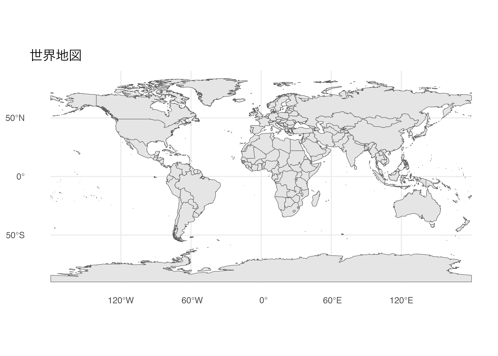
色を変える
- 1
-
fillで塗りつぶし色、colorで国境線の色、linewidthで線の太さを指定
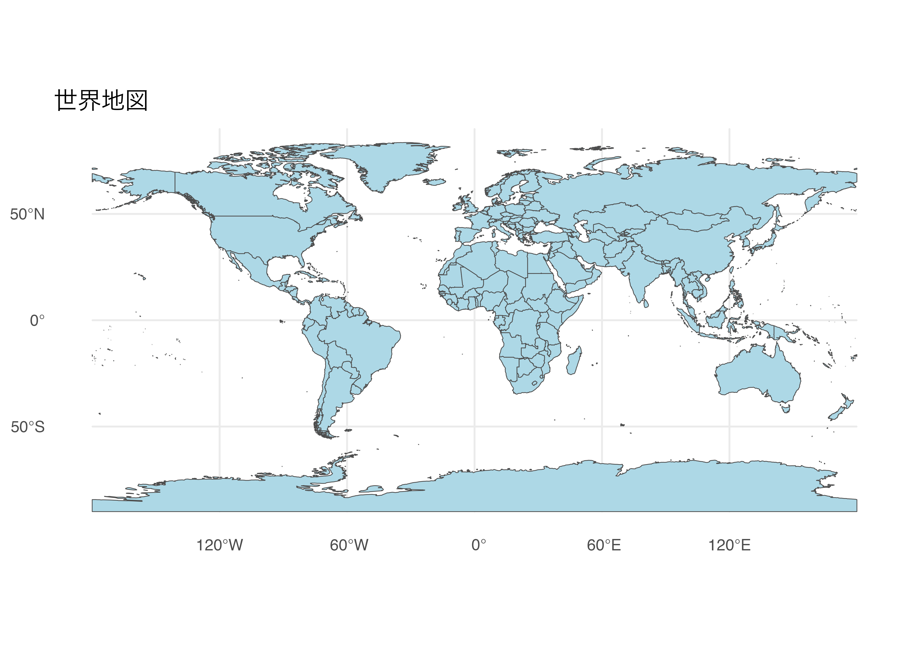
コロプレス図（塗り分け地図）
国ごとのデータを色の濃淡で表現する地図をコロプレス図といいます。 fill に数値変数をマッピングするだけで描けます。
大陸別の人口を塗り分ける
world データには pop_est（推定人口）という変数が含まれています。
- 1
-
aes(fill = pop_est)で人口の大きさを色の濃淡で表現 - 2
-
scale_fill_viridis_c()でカラースケールを指定（連続変数用）
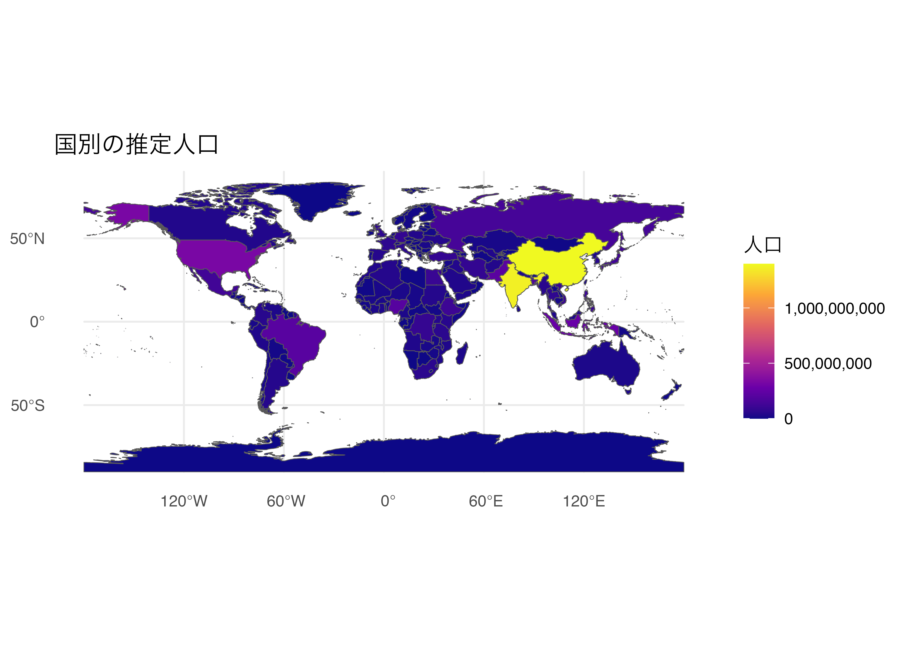
gapminder のデータを使ってコロプレス図を描く
# gapminder から 2007 年のデータを抽出
gap_2007 <- gapminder |>
filter(year == 2007)
# world データと結合
# world の name_long 列 と gapminder の country 列を照合
world_gap <- world |>
left_join(gap_2007, by = c("name_long" = "country"))
ggplot(data = world_gap) +
geom_sf(aes(fill = gdpPercap)) +
scale_fill_viridis_c(
name = "一人当たりGDP\n（ドル）",
option = "magma",
na.value = "gray80"
) +
labs(title = "2007年 一人当たりGDP") +
theme_minimal()- 1
-
left_join()で地図データと定量データを結合。by =で結合キーを指定 - 2
-
na.valueでデータがない国（マッチしなかった国）の色を指定
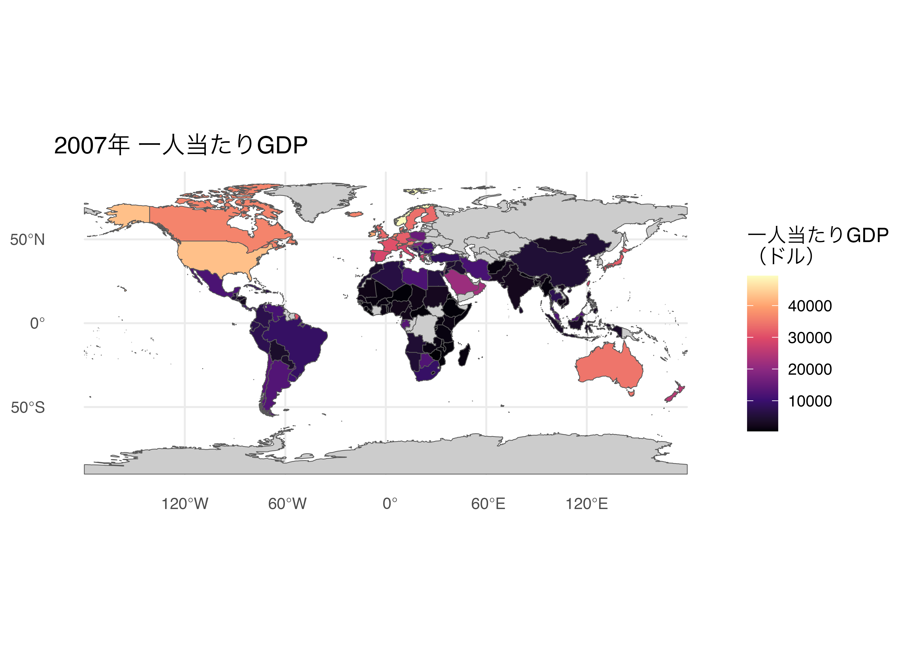
Note
結合キーの注意点
world の国名と gapminder の国名は完全に一致しないことがあります（例：「United States of America」vs「United States」）。 この場合、na.value = "gray80" でデータなしの国をグレーで塗りつぶすと視覚的にわかりやすくなります。
より精度を高めたい場合は、ISO 国コード（iso_a3 など）を使って結合するのがおすすめです。
特定の地域を拡大する（coord_sf()）
coord_sf() で表示する緯度・経度の範囲を指定して、地図を拡大できます。
- 1
-
xlimで経度の範囲、ylimで緯度の範囲を指定
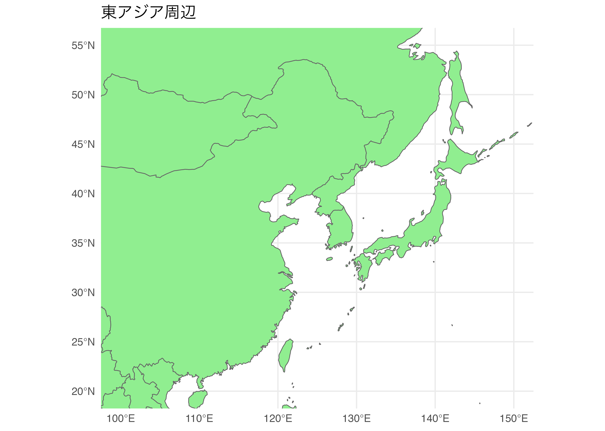
5.4 日本地図
都道府県レベルの地図データを取得
ne_states() 関数で都道府県レベルの地図データを取得できます。
Rows: 47
Columns: 122
$ featurecla <chr> "Admin-1 states provinces lakes", "Admin-1 states provinces…
$ scalerank <int> 2, 6, 6, 6, 2, 6, 6, 6, 6, 6, 6, 6, 6, 6, 6, 6, 6, 6, 6, 6,…
$ adm1_code <chr> "JPN-3501", "JPN-1835", "JPN-1829", "JPN-1827", "JPN-3500",…
$ diss_me <int> 3501, 1835, 1829, 1827, 3500, 1830, 1831, 1836, 1833, 1832,…
$ iso_3166_2 <chr> "JP-46", "JP-44", "JP-40", "JP-41", "JP-42", "JP-43", "JP-4…
$ wikipedia <chr> NA, NA, NA, NA, NA, NA, NA, NA, NA, NA, NA, NA, NA, NA, NA,…
$ iso_a2 <chr> "JP", "JP", "JP", "JP", "JP", "JP", "JP", "JP", "JP", "JP",…
$ adm0_sr <int> 5, 1, 1, 1, 3, 1, 1, 1, 1, 4, 5, 5, 5, 1, 3, 1, 1, 5, 1, 3,…
$ name <chr> "Kagoshima", "Ōita", "Fukuoka", "Saga", "Nagasaki", "Kumamo…
$ name_alt <chr> NA, NA, "Hukuoka", NA, NA, NA, NA, "Tokusima", NA, NA, "Kot…
$ name_local <chr> "鹿児島県", "大分県", "福岡県", "佐賀県", "長崎県", "熊本県", "宮崎県", "徳島県", "香…
$ type <chr> "Ken", "Ken", "Ken", "Ken", "Ken", "Ken", "Ken", "Ken", "Ke…
$ type_en <chr> "Prefecture", "Prefecture", "Prefecture", "Prefecture", "Pr…
$ code_local <chr> NA, NA, NA, NA, NA, NA, NA, NA, NA, NA, NA, NA, NA, NA, NA,…
$ code_hasc <chr> "JP.KS", "JP.OT", "JP.FO", "JP.SG", "JP.NS", "JP.KM", "JP.M…
$ note <chr> NA, NA, NA, NA, NA, NA, NA, NA, NA, NA, NA, NA, NA, NA, NA,…
$ hasc_maybe <chr> "JP.NR", "JP.ON", "JP.NS", "JP.OS", "JP.OY", "JP.NI", "JP.O…
$ region <chr> "Kyushu", "Kyushu", "Kyushu", NA, NA, "Kyushu", "Kyushu", "…
$ region_cod <chr> "JPN-KYS", "JPN-SHK", "JPN-KYS", NA, NA, "JPN-KYS", "JPN-KY…
$ provnum_ne <int> 3, 48, 46, 47, 5, 6, 49, 45, 4, 14, 15, 7, 12, 23, 10, 18, …
$ gadm_level <int> 1, 1, 1, 1, 1, 1, 1, 1, 1, 1, 1, 1, 1, 1, 1, 1, 1, 1, 1, 1,…
$ check_me <int> 20, 20, 20, 20, 20, 20, 20, 20, 20, 20, 20, 20, 20, 20, 20,…
$ datarank <int> 9, 2, 2, 2, 9, 2, 2, 2, 2, 2, 2, 2, 2, 2, 2, 2, 2, 2, 2, 2,…
$ abbrev <chr> NA, NA, NA, NA, NA, NA, NA, NA, NA, NA, NA, NA, NA, NA, NA,…
$ postal <chr> NA, "OT", "FO", "SG", NA, "KM", "MZ", "TS", "KG", "EH", "KC…
$ area_sqkm <int> 0, 0, 0, 0, 0, 0, 0, 0, 0, 0, 0, 0, 0, 0, 0, 0, 0, 0, 0, 0,…
$ sameascity <int> -99, 7, 7, -99, -99, -99, -99, -99, -99, -99, -99, -99, -99…
$ labelrank <int> 2, 7, 7, 6, 2, 6, 6, 6, 6, 6, 6, 6, 6, 6, 6, 7, 6, 6, 6, 6,…
$ name_len <int> 9, 4, 7, 4, 8, 8, 8, 9, 6, 5, 5, 7, 10, 7, 5, 5, 5, 8, 6, 7…
$ mapcolor9 <int> 5, 5, 5, 5, 5, 5, 5, 5, 5, 5, 5, 5, 5, 5, 5, 5, 5, 5, 5, 5,…
$ mapcolor13 <int> 4, 4, 4, 4, 4, 4, 4, 4, 4, 4, 4, 4, 4, 4, 4, 4, 4, 4, 4, 4,…
$ fips <chr> "JA18", "JA30", "JA07", "JA33", "JA27", "JA21", "JA25", "JA…
$ fips_alt <chr> "JA28", "JA47", "JA27", "JA32", "JA31", "JA29", "JA30", "JA…
$ woe_id <int> 2345867, 2345879, 58646425, 2345882, 2345876, 2345870, 2345…
$ woe_label <chr> "Kagoshima Prefecture, JP, Japan", "Oita Prefecture, JP, Ja…
$ woe_name <chr> "Kagoshima", "Oita", "Fukuoka", "Saga", "Nagasaki", "Kumamo…
$ latitude <dbl> 29.4572, 33.2006, 33.4906, 33.0097, 32.6745, 32.5880, 32.09…
$ longitude <dbl> 129.601, 131.449, 130.616, 130.147, 128.755, 130.834, 131.2…
$ sov_a3 <chr> "JPN", "JPN", "JPN", "JPN", "JPN", "JPN", "JPN", "JPN", "JP…
$ adm0_a3 <chr> "JPN", "JPN", "JPN", "JPN", "JPN", "JPN", "JPN", "JPN", "JP…
$ adm0_label <int> 4, 4, 4, 4, 4, 4, 4, 4, 4, 4, 4, 4, 4, 4, 4, 4, 4, 4, 4, 4,…
$ admin <chr> "Japan", "Japan", "Japan", "Japan", "Japan", "Japan", "Japa…
$ geonunit <chr> "Japan", "Japan", "Japan", "Japan", "Japan", "Japan", "Japa…
$ gu_a3 <chr> "JPN", "JPN", "JPN", "JPN", "JPN", "JPN", "JPN", "JPN", "JP…
$ gn_id <int> 1860825, 1854484, 1863958, 1853299, 1856156, 1858419, 18567…
$ gn_name <chr> "Kagoshima-ken", "Oita-ken", "Fukuoka-ken", "Saga-ken", "Na…
$ gns_id <int> -231556, -240089, -227382, -241905, -237758, -234759, -2369…
$ gns_name <chr> "Kagoshima-ken", "Oita-ken", "Fukuoka-ken", "Saga-ken", "Na…
$ gn_level <int> 1, 1, 1, 1, 1, 1, 1, 1, 1, 1, 1, 1, 1, 1, 1, 1, 1, 1, 1, 1,…
$ gn_region <chr> NA, NA, NA, NA, NA, NA, NA, NA, NA, NA, NA, NA, NA, NA, NA,…
$ gn_a1_code <chr> "JP.18", "JP.30", "JP.07", "JP.33", "JP.27", "JP.21", "JP.2…
$ region_sub <chr> NA, NA, NA, NA, NA, NA, NA, NA, NA, NA, NA, NA, NA, NA, NA,…
$ sub_code <chr> NA, NA, NA, NA, NA, NA, NA, NA, NA, NA, NA, NA, NA, NA, NA,…
$ gns_level <int> 1, 1, 1, 1, 1, 1, 1, 1, 1, 1, 1, 1, 1, 1, 1, 1, 1, 1, 1, 1,…
$ gns_lang <chr> "jpn", "jpn", "jpn", "jpn", "jpn", "jpn", "jpn", "jpn", "jp…
$ gns_adm1 <chr> "JA18", "JA30", "JA07", "JA33", "JA27", "JA21", "JA25", "JA…
$ gns_region <chr> NA, NA, NA, NA, NA, NA, NA, NA, NA, NA, NA, NA, NA, NA, NA,…
$ min_label <dbl> 7, 7, 7, 7, 7, 7, 7, 7, 7, 7, 7, 7, 7, 7, 7, 7, 7, 7, 7, 7,…
$ max_label <dbl> 11, 11, 11, 11, 11, 11, 11, 11, 11, 11, 11, 11, 11, 11, 11,…
$ min_zoom <dbl> 3, 3, 3, 3, 3, 3, 3, 3, 3, 3, 3, 3, 3, 3, 3, 3, 3, 3, 3, 3,…
$ wikidataid <chr> "Q15701", "Q133924", "Q123258", "Q160420", "Q169376", "Q130…
$ name_ar <chr> "كاغوشيما", "أويتا", "فوكوكا", "ساغا", "ناغاساكي", "كوماموت…
$ name_bn <chr> "কাগোশিমা প্রশাসনিক অঞ্চল", "ওওইতা প্রশাসনিক অঞ্চল", "ফুকুওকা প্রশাসনিক অঞ্চল", "সাগা প্র…
$ name_de <chr> "Präfektur Kagoshima", "Präfektur Ōita", "Präfektur Fukuoka…
$ name_en <chr> "Kagoshima Prefecture", "Ōita Prefecture", "Fukuoka Prefect…
$ name_es <chr> "Kagoshima", "Ōita", "Fukuoka", "Saga", "Nagasaki", "Kumamo…
$ name_fr <chr> "Kagoshima", "Préfecture d'Ōita", "Fukuoka", "Saga", "Nagas…
$ name_el <chr> "Περιφέρεια Καγκοσίμα", "Όιτα", "Φουκουόκα", "Σάγκα", "Νομα…
$ name_hi <chr> "कागोशिमा प्रीफेक्चर", "ओइटा प्रीफेक्चर", "फुकुओका प्रान्त", "सागा प्रान्त", "नागासाकी प्रीफेक्चर", "…
$ name_hu <chr> "Kagosima prefektúra", "Óita prefektúra", "Fukuoka prefektú…
$ name_id <chr> "Prefektur Kagoshima", "Prefektur Oita", "Prefektur Fukuoka…
$ name_it <chr> "Kagoshima", "Ōita", "Fukuoka", "Saga", "Nagasaki", "Kumamo…
$ name_ja <chr> "鹿児島県", "大分県", "福岡県", "佐賀県", "長崎県", "熊本県", "宮崎県", "徳島県", "香…
$ name_ko <chr> "가고시마현", "오이타현", "후쿠오카현", "사가현", "나가사키현", "구마모토현", "미야자키현",…
$ name_nl <chr> "Kagoshima", "Oita", "Fukuoka", "Saga", "Nagasaki", "Kumamo…
$ name_pl <chr> "Prefektura Kagoshima", "Prefektura Ōita", "Prefektura Fuku…
$ name_pt <chr> "Kagoshima", "Oita", "Fukuoka", "Saga", "Nagasaki", "Kumamo…
$ name_ru <chr> "Кагосима", "Оита", "Фукуока", "Сага", "Нагасаки", "Кумамот…
$ name_sv <chr> "Kagoshima prefektur", "Oita prefektur", "Fukuoka prefektur…
$ name_tr <chr> "Kagoşima ili", "Ōita", "Fukuoka", "Saga", "Nagasaki", "Kum…
$ name_vi <chr> "Kagoshima", "Ōita", "Fukuoka", "Saga", "Nagasaki", "Kumamo…
$ name_zh <chr> "鹿儿岛县", "大分县", "福冈县", "佐贺县", "长崎县", "熊本县", "宫崎县", "德岛县", "香…
$ ne_id <dbl> 1159315225, 1159311905, 1159311899, 1159311895, 1159315235,…
$ name_he <chr> "קגושימה", "אויטה", "פוקואוקה", "סאגה", "נגסאקי", "קוממוטו"…
$ name_uk <chr> "Префектура Каґошіма", "Префектура Ойта", "Префектура Фукуо…
$ name_ur <chr> "کاگوشیما پریفیکچر", "اوئیتا پریفیکچر", "فوکوکا پریفیکچر", …
$ name_fa <chr> "استان کاگوشیما", "استان اوئیتا", "استان فوکوئوکا", "استان …
$ name_zht <chr> "鹿兒島縣", "大分縣", "福岡縣", "佐賀縣", "長崎縣", "熊本縣", "宮崎縣", "德島縣", "香…
$ FCLASS_ISO <chr> NA, NA, NA, NA, NA, NA, NA, NA, NA, NA, NA, NA, NA, NA, NA,…
$ FCLASS_US <chr> NA, NA, NA, NA, NA, NA, NA, NA, NA, NA, NA, NA, NA, NA, NA,…
$ FCLASS_FR <chr> NA, NA, NA, NA, NA, NA, NA, NA, NA, NA, NA, NA, NA, NA, NA,…
$ FCLASS_RU <chr> NA, NA, NA, NA, NA, NA, NA, NA, NA, NA, NA, NA, NA, NA, NA,…
$ FCLASS_ES <chr> NA, NA, NA, NA, NA, NA, NA, NA, NA, NA, NA, NA, NA, NA, NA,…
$ FCLASS_CN <chr> NA, NA, NA, NA, NA, NA, NA, NA, NA, NA, NA, NA, NA, NA, NA,…
$ FCLASS_TW <chr> NA, NA, NA, NA, NA, NA, NA, NA, NA, NA, NA, NA, NA, NA, NA,…
$ FCLASS_IN <chr> NA, NA, NA, NA, NA, NA, NA, NA, NA, NA, NA, NA, NA, NA, NA,…
$ FCLASS_NP <chr> NA, NA, NA, NA, NA, NA, NA, NA, NA, NA, NA, NA, NA, NA, NA,…
$ FCLASS_PK <chr> NA, NA, NA, NA, NA, NA, NA, NA, NA, NA, NA, NA, NA, NA, NA,…
$ FCLASS_DE <chr> NA, NA, NA, NA, NA, NA, NA, NA, NA, NA, NA, NA, NA, NA, NA,…
$ FCLASS_GB <chr> NA, NA, NA, NA, NA, NA, NA, NA, NA, NA, NA, NA, NA, NA, NA,…
$ FCLASS_BR <chr> NA, NA, NA, NA, NA, NA, NA, NA, NA, NA, NA, NA, NA, NA, NA,…
$ FCLASS_IL <chr> NA, NA, NA, NA, NA, NA, NA, NA, NA, NA, NA, NA, NA, NA, NA,…
$ FCLASS_PS <chr> NA, NA, NA, NA, NA, NA, NA, NA, NA, NA, NA, NA, NA, NA, NA,…
$ FCLASS_SA <chr> NA, NA, NA, NA, NA, NA, NA, NA, NA, NA, NA, NA, NA, NA, NA,…
$ FCLASS_EG <chr> NA, NA, NA, NA, NA, NA, NA, NA, NA, NA, NA, NA, NA, NA, NA,…
$ FCLASS_MA <chr> NA, NA, NA, NA, NA, NA, NA, NA, NA, NA, NA, NA, NA, NA, NA,…
$ FCLASS_PT <chr> NA, NA, NA, NA, NA, NA, NA, NA, NA, NA, NA, NA, NA, NA, NA,…
$ FCLASS_AR <chr> NA, NA, NA, NA, NA, NA, NA, NA, NA, NA, NA, NA, NA, NA, NA,…
$ FCLASS_JP <chr> NA, NA, NA, NA, NA, NA, NA, NA, NA, NA, NA, NA, NA, NA, NA,…
$ FCLASS_KO <chr> NA, NA, NA, NA, NA, NA, NA, NA, NA, NA, NA, NA, NA, NA, NA,…
$ FCLASS_VN <chr> NA, NA, NA, NA, NA, NA, NA, NA, NA, NA, NA, NA, NA, NA, NA,…
$ FCLASS_TR <chr> NA, NA, NA, NA, NA, NA, NA, NA, NA, NA, NA, NA, NA, NA, NA,…
$ FCLASS_ID <chr> NA, NA, NA, NA, NA, NA, NA, NA, NA, NA, NA, NA, NA, NA, NA,…
$ FCLASS_PL <chr> NA, NA, NA, NA, NA, NA, NA, NA, NA, NA, NA, NA, NA, NA, NA,…
$ FCLASS_GR <chr> NA, NA, NA, NA, NA, NA, NA, NA, NA, NA, NA, NA, NA, NA, NA,…
$ FCLASS_IT <chr> NA, NA, NA, NA, NA, NA, NA, NA, NA, NA, NA, NA, NA, NA, NA,…
$ FCLASS_NL <chr> NA, NA, NA, NA, NA, NA, NA, NA, NA, NA, NA, NA, NA, NA, NA,…
$ FCLASS_SE <chr> NA, NA, NA, NA, NA, NA, NA, NA, NA, NA, NA, NA, NA, NA, NA,…
$ FCLASS_BD <chr> NA, NA, NA, NA, NA, NA, NA, NA, NA, NA, NA, NA, NA, NA, NA,…
$ FCLASS_UA <chr> NA, NA, NA, NA, NA, NA, NA, NA, NA, NA, NA, NA, NA, NA, NA,…
$ FCLASS_TLC <chr> NA, NA, NA, NA, NA, NA, NA, NA, NA, NA, NA, NA, NA, NA, NA,…
$ geometry <MULTIPOLYGON [°]> MULTIPOLYGON (((129.7832 31..., MULTIPOLYGON (…日本地図を描く（基本）
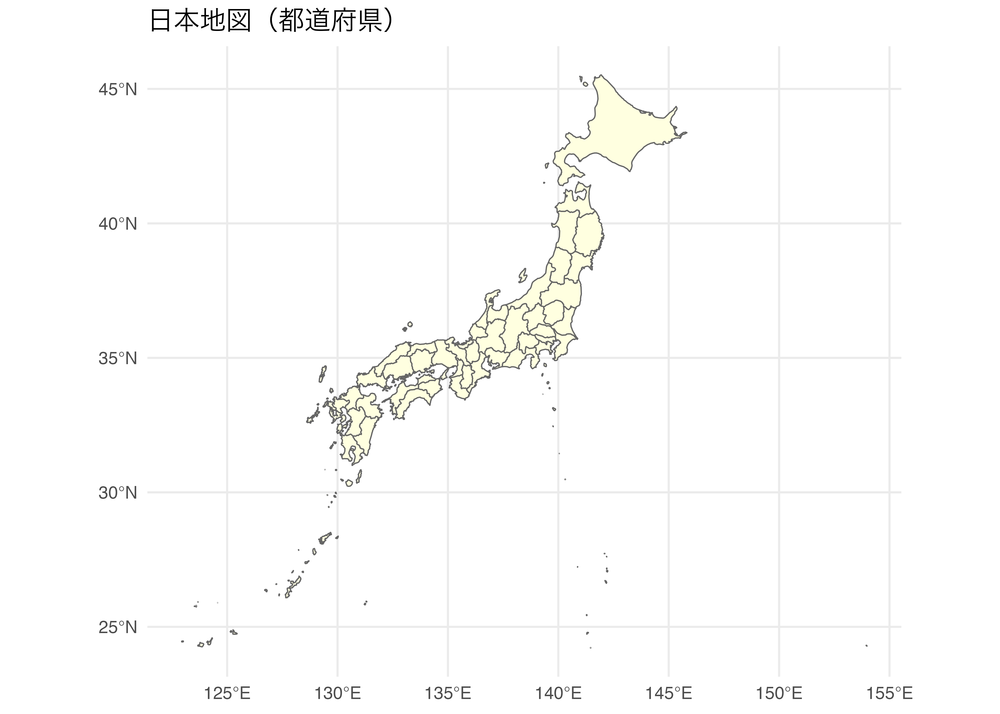
都道府県名を表示する（geom_sf_label()）
- 1
-
geom_sf_label()でポリゴンの重心位置にラベルを表示
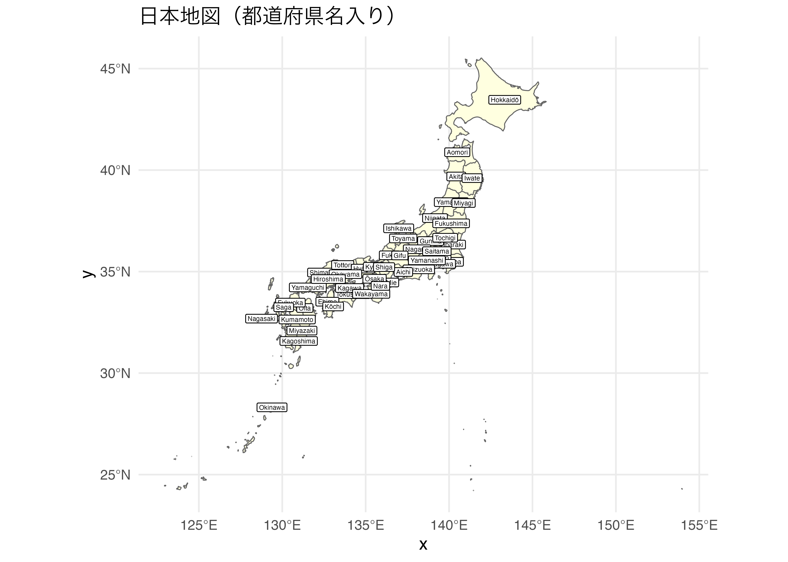
Note
ラベルが重なるときは ggrepel を使う
geom_sf_label() ではラベルが重なることがあります。 ggrepel パッケージの geom_label_repel() を使うと、ラベルが自動的に重ならないように調整されます。
5.5 都道府県レベルの詳細地図（jpndistrict）
jpndistrict パッケージとは
ne_states() では市区町村レベルの地図は描けません。 徳島大学の瓜生真也先生が公開している jpndistrict パッケージを使うと、 都道府県・市区町村レベルの詳細な地図データを取得できます。
Important
東京都の地図データを取得する
- 1
-
jpn_pref()に都道府県名を指定すると、その都道府県内の市区町村データが取得できる
[1] "sf" "tbl_df" "tbl" "data.frame"東京都の地図をプロットする
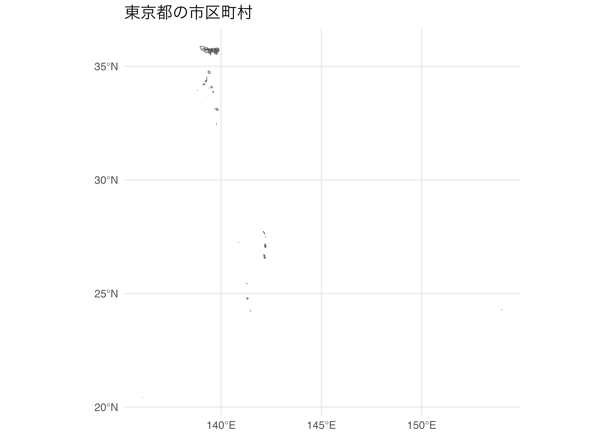
東京都の本州部分にフォーカスする
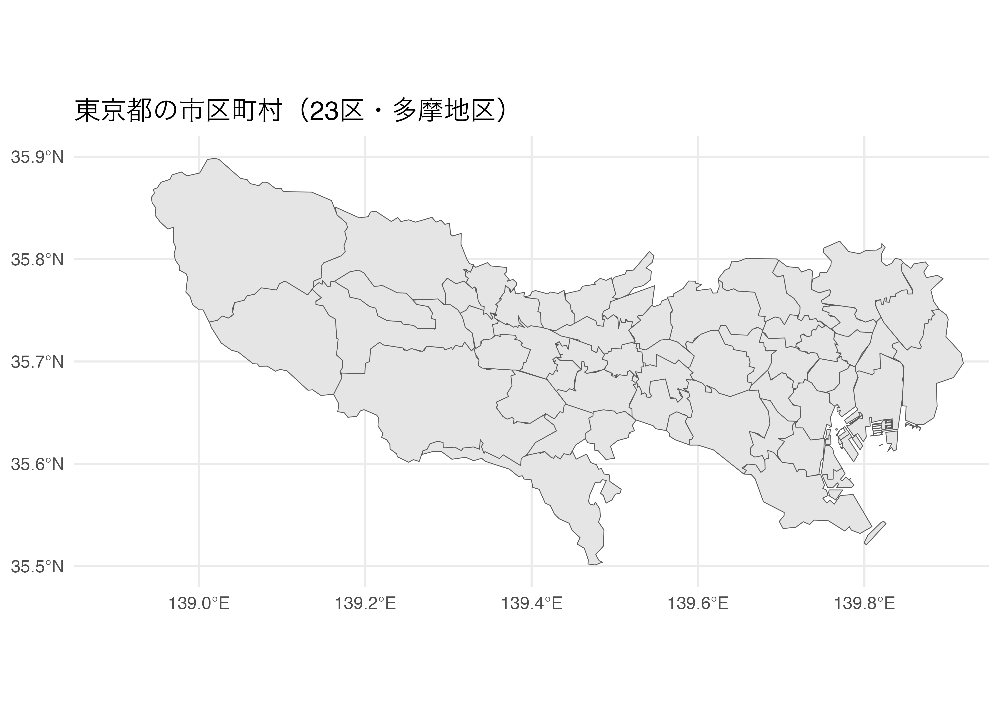
東京23区の人口コロプレス図
東京都の地図データに人口データを結合して、コロプレス図を描きます。
ステップ1：地図データを確認する
Simple feature collection with 10 features and 1 field
Geometry type: MULTIPOLYGON
Dimension: XY
Bounding box: xmin: 139.6614 ymin: 35.58483 xmax: 139.8483 ymax: 35.74351
Geodetic CRS: WGS 84
# A tibble: 10 × 2
city geometry
<chr> <MULTIPOLYGON [°]>
1 千代田区 (((139.7299 35.68555, 139.7333 35.67916, 139.7367 35.67876, 139.743…
2 中央区 (((139.7589 35.65892, 139.7646 35.65606, 139.7672 35.65799, 139.770…
3 港区 (((139.7714 35.62304, 139.7825 35.62952, 139.7765 35.63635, 139.770…
4 新宿区 (((139.6735 35.71852, 139.679 35.71817, 139.6792 35.71464, 139.6817…
5 文京区 (((139.7174 35.71455, 139.7232 35.71032, 139.7317 35.70918, 139.732…
6 台東区 (((139.7632 35.72184, 139.7685 35.71589, 139.7644 35.7173, 139.7681…
7 墨田区 (((139.8095 35.68689, 139.812 35.68851, 139.8116 35.69181, 139.8198…
8 江東区 (((139.7715 35.61667, 139.7712 35.61661, 139.7726 35.61494, 139.772…
9 品川区 (((139.7494 35.58876, 139.7559 35.58915, 139.7559 35.58483, 139.762…
10 目黒区 (((139.6664 35.61861, 139.6631 35.61569, 139.6631 35.60861, 139.668…ステップ2：人口データを用意する
ここでは、東京23区の人口データを手動で作成します。 （実際の授業では外部ファイルから読み込む場合もあります。）
# 東京23区の人口データ（2020年国勢調査、単位：万人）
df_pop <- tibble(
city = c(
"千代田区", "中央区", "港区", "新宿区", "文京区",
"台東区", "墨田区", "江東区", "品川区", "目黒区",
"大田区", "世田谷区", "渋谷区", "中野区", "杉並区",
"豊島区", "北区", "荒川区", "板橋区", "練馬区",
"足立区", "葛飾区", "江戸川区"
),
pop_10k = c(
6.6, 17.1, 25.8, 34.7, 23.4,
19.6, 27.6, 51.9, 40.9, 28.0,
72.3, 94.6, 23.7, 34.1, 58.0,
29.4, 35.4, 22.2, 58.0, 74.4,
68.9, 45.5, 70.0
)
)ステップ3：地図データと人口データを結合する
- 1
- 23区のみに絞り込む（市区町村名で検索）
- 2
-
地図データと人口データを
city_en（市区町村の英語名）をキーに結合
ステップ4：コロプレス図を描く
- 1
-
aes(fill = pop_10k)で人口の多さを色の濃淡で表現
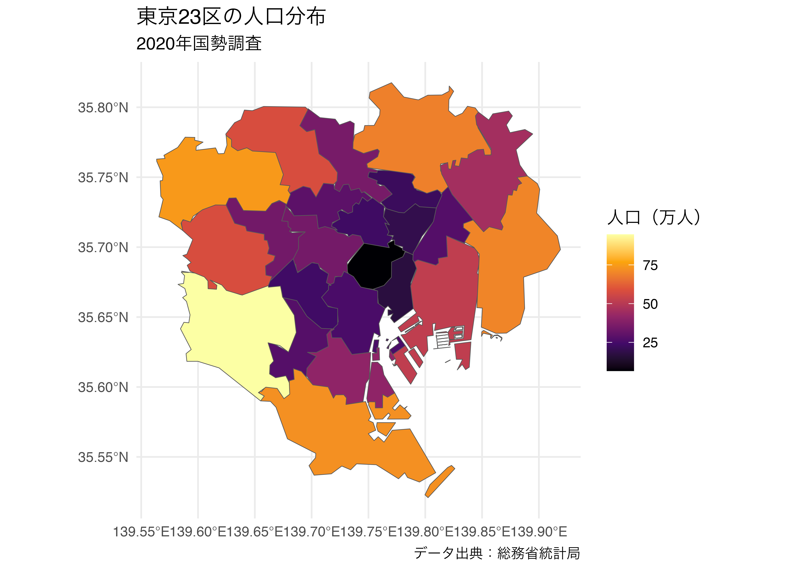
区名をラベルとして表示する
- 1
-
geom_sf_text()でポリゴンの重心に区名を表示。color = "white"で文字色を白に
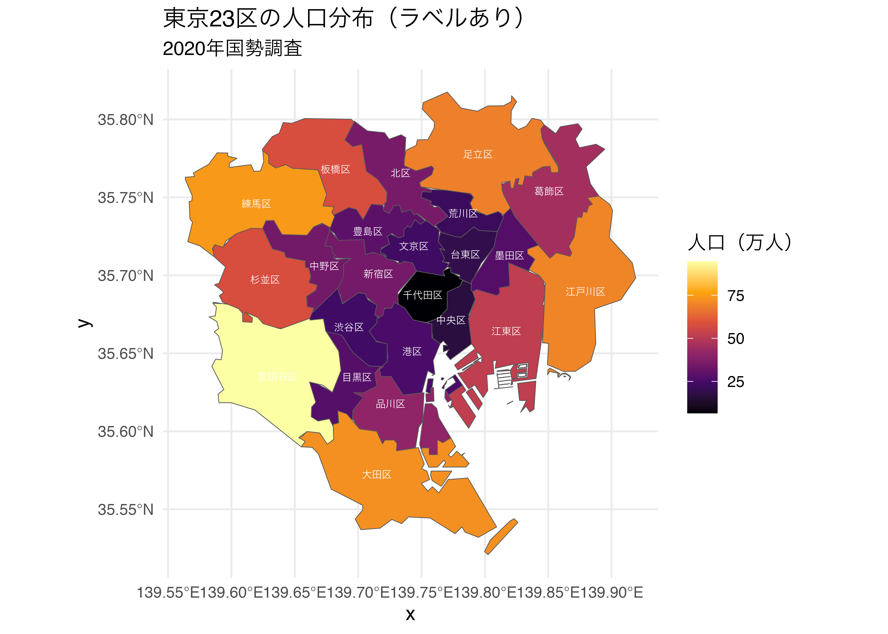
5.6 演習問題
世界地図
Warning
ne_countries() で世界地図データを取得し、大陸（continent）別に色を塗り分けた世界地図を描いてください。 ただし、以下の条件を満たしてください。
fill = continentで大陸ごとに色を変える- タイトル：「大陸別の世界地図」
- 凡例タイトル：「大陸」
- テーマ：
theme_minimal()
Warning
gapminder データと世界地図データを結合して、2007年の平均寿命（lifeExp）を塗り分けたコロプレス図を描いてください。
gapminderからyear == 2007のデータを抽出するworldのname_longとgapminderのcountryでleft_join()するfill = lifeExpで平均寿命を色で表現する- カラースケール：
scale_fill_viridis_c()（option = "viridis"） - データなしの国は
na.value = "gray80"でグレーにする - タイトル：「2007年 平均寿命の世界分布」
- テーマ：
theme_minimal()
日本地図
Warning
ne_states() で日本の都道府県データを取得し、以下の条件で地図を描いてください。
- 塗りつぶし色：
"lightyellow" - 国境線の色：
"steelblue"、線幅：0.4 - タイトル：「日本の都道府県」
- テーマ：
theme_void()（軸・グリッドを非表示にするテーマ）
Warning
Warning
jpn_pref() を使って、愛知県の市区町村地図を描いてください。 ただし、以下の条件を満たしてください。
admin_name = "愛知県"で愛知県のデータを取得する- 塗りつぶし色：
"lightyellow" - 国境線の色：
"gray40"、線幅：0.3 - タイトル：「愛知県の市区町村」
- テーマ：
theme_minimal()
Warning
授業で説明した手順を参考に、東京23区の人口コロプレス図を自分で組み立ててください。 ただし、以下の手順で実行してください。
jpn_pref(admin_name = "東京都")で地図データを取得する- 以下の人口データ（
df_pop）を使う（すでに作成済みのものを流用） filter(city %in% df_pop$city)で23区のみ抽出するleft_join()で地図データと人口データをcityをキーに結合するgeom_sf(aes(fill = pop_10k))でコロプレス図を描く- カラースケール：
scale_fill_viridis_c(option = "magma") - タイトル：「東京23区の人口分布」、凡例タイトル：「人口（万人）」
- テーマ：
theme_void()
5.7 まとめ
本日学んだこと
地図を描くための基本的な流れ
① 地理空間データの取得（ne_countries / ne_states / jpn_pref）
② 定量データを left_join() で結合
③ geom_sf(aes(fill = 変数名)) でコロプレス図を描く
④ scale_fill_viridis_c() でカラースケールを調整主要な関数まとめ
| 関数 | 役割 |
|---|---|
ne_countries() |
世界の国境データを取得 |
ne_states(country = "japan") |
都道府県データを取得 |
jpn_pref(admin_name = "〇〇府") |
市区町村データを取得 |
geom_sf() |
地図を描く |
geom_sf_text() |
ポリゴン重心にテキストを表示 |
geom_sf_label() |
ポリゴン重心にラベルを表示 |
coord_sf(xlim, ylim) |
表示範囲（緯度・経度）を指定 |
scale_fill_viridis_c() |
連続変数のカラースケール |
left_join() |
地図データと定量データを結合 |